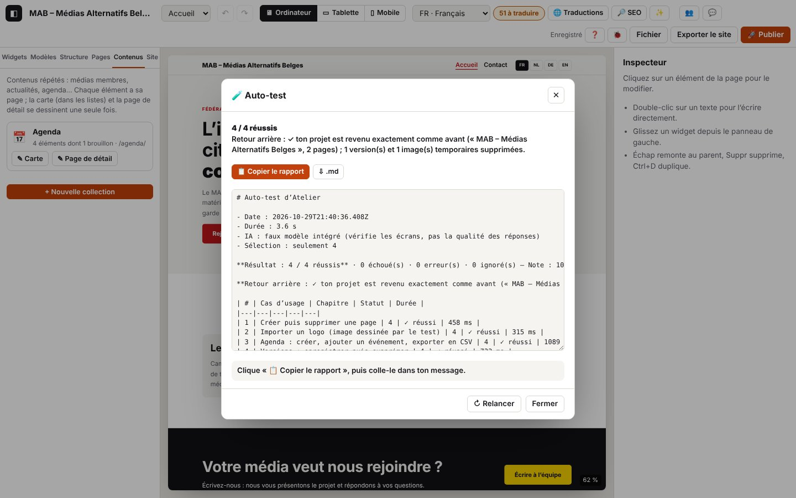

15. Auto-test en console

L'auto-test rejoue les cas d'usage de ce guide dans ton navigateur, sur ton installation, comme si quelqu'un cliquait à ta place : il ajoute un widget, annule, crée une page, importe un logo, crée un agenda, exporte le site, teste la connexion à publish.php… Pour chaque cas, il vérifie ce qui a changé dans le projet et le journal attendu (les codes des chapitres précédents), puis donne un rapport à coller dans ton message. Ton projet est mis de côté avant et remis exactement comme avant à la fin (historique d'annulation compris) : tu peux le relancer autant de fois que tu veux.
Domaines du journal : selftest.* (l'auto-test et le retour arrière) ; chaque cas garde les codes de son chapitre (page.*, collection.*, export.*…).
15.1 Lancer l'auto-test
Trois façons, du plus simple au plus détaillé. À chaque fois : ne touche à rien et reste sur cet onglet pendant 20 à 60 secondes (dans un onglet en arrière-plan, Chrome ralentit la page et des cas dépasseraient leur délai). L'éditeur affiche l'exemple du MAB, des fenêtres s'ouvrent et se ferment, puis la fenêtre 🧪 Auto-test montre le résultat, le retour arrière et le rapport : 📋 Copier le rapport (ou ⇩ .md) et colle-le dans ton message.
- Par l'adresse, sans console : ouvre
http://localhost:8888/atelier/?autotest(ton adresse +?autotest). L'auto-test démarre tout seul ; l'adresse est nettoyée aussitôt, donc un rechargement ne le relance pas.?autotest=realutilise ton Gemini Nano,?autotest=offignore les cas d'IA. - Ctrl+K « Auto-test ».
- Dans la console (F12, onglet Console), une commande courte à taper : Elle renvoie une ligne de résultat et ouvre la même fenêtre. Avec options :
autotest({ ai: 'real' }),autotest({ only: [4] }).autotest()
Chrome refuse de coller dans la console ? C'est une protection de Chrome la première fois : tape à la main allow pasting (ou autoriser le collage si Chrome est en français), Entrée, puis colle. Le plus simple reste de taper autotest() ou d'utiliser l'adresse ?autotest.
Pour les développeurs : copy(await atelierDebug.selftest()) fait la même chose sans fenêtre et met le rapport dans le presse-papiers (copy est une commande de la console de Chrome) ; await atelierDebug.report() redonne le dernier rapport.
Options
| Option | Effet | Exemple |
|---|---|---|
only | seulement ces cas (identifiants ou numéros de chapitre) | atelierDebug.selftest({ only: [4, 'demander'] }) |
skip | tous sauf ceux-là | atelierDebug.selftest({ skip: ['publication'] }) |
ai | 'fake' (par défaut) : faux modèle intégré, vérifie les écrans ; 'real' : ton Gemini Nano ; false : cas d'IA ignorés | atelierDebug.selftest({ ai: 'real' }) |
publish | true (par défaut) : test de connexion à publish.php avec l'adresse du projet — lecture seule, jamais de publication ; false : ignoré | atelierDebug.selftest({ publish: false }) |
full | ajoute tout le journal de l'auto-test au rapport (long) | autotest({ full: true }) |
download | télécharge aussi un .json (rapport, résultats, journal) | atelierDebug.selftest({ download: true }) |
await atelierDebug.cases() liste les identifiants. Pour la qualité des réponses du vrai Gemini Nano, le bon outil reste le banc d'essai (chapitre 14) ; ai: 'real' vérifie surtout que les écrans fonctionnent avec lui.
Les 26 cas
| Identifiant | Chapitre | Cas | Vérifié |
|---|---|---|---|
demarrage | 1 | Projet de test chargé et enregistré | exemple affiché, storage.save |
journal | 0 | Fenêtre Journal : ouvrir, régler, fermer | lignes affichées, réglage remis |
selection | 2 | Clic, flèche ↓, Échap | titre, élément suivant, colonne parente |
ajout | 2 | Widget depuis la bibliothèque | un bouton de plus, sélectionné |
annuler | 2 | Annuler, rétablir | le bouton part puis revient |
raccourcis | 2 | Ctrl+D, Ctrl+C, Ctrl+V, Suppr | nombre de titres à chaque étape |
texte | 2 | Titre modifié dans la page | texte enregistré, edit.ok |
panneaux | 2 | Élargir les panneaux (clavier, double-clic) | panneau de gauche et de droite plus larges, poignée qui annonce sa largeur, largeur d'origine ; tes largeurs sont remises après |
infobulles | 2 | Infobulles des boutons | survol de ↶ (« Annuler » + touches), passage rapide sur ✨, masquage au clic |
commande | 2 | Ctrl+K « journal de débogage » | la fenêtre s'ouvre |
style | 3 | Taille du texte, ↺ | 31px posé puis retiré |
appareils | 3 | Mobile puis ordinateur | largeur du canevas |
pages | 4 | Créer puis supprimer une page | page ouverte, puis disparue |
image | 4 | Logo dessiné par le test | image convertie, dans le projet |
collection | 4 | Agenda, événement, CSV | date et titre enregistrés, .csv |
versions | 4 | Enregistrer puis supprimer | version listée puis retirée |
traductions | 5 | Tableau, filtre | tableau affiché |
seo | 6 | Référencement, autre langue | analyse relancée |
ia-etat | 7 | État des modèles | fenêtre remplie |
verifier-exporter | 8 | Vérification puis .zip | export autorisé, .zip produit |
enregistrer-json | 1 | Fichier → Enregistrer le projet (.json) | .json lisible avec toutes les pages |
publication | 8 | Tester la connexion à publish.php | réponse de publish.php, version à jour |
palette | 12 | Palette depuis le logo, annuler | couleurs AA, appliquée puis annulée |
contenus-texte | 12 | Fiches depuis un texte collé (IA) | 3 fiches proposées puis créées |
demander | 13 | « ajoute une FAQ de 3 questions » (IA) | FAQ ajoutée, Ctrl+Z l'enlève d'un coup |
collaboration | 10 | Deux appareils | toujours ignoré (voir le chapitre 10) |
Journal attendu — par l'adresse (journaux/autotest-adresse.log) :
Détails techniques : journal attendu
14:34:25.101 +0.06s INFO selftest.auto Auto-test demandé par l’adresse (?autotest) {"ai":"fake"}
14:34:25.413 +0.37s INFO selftest.run.start [selftest.run#1] Auto-test : 25 cas d’usage {"cases":["demarrage","journal","selection","ajout","annuler","raccourcis","texte","infobulles","commande","style","appareils","pages","image","collection","versions","traductions","seo","ia-etat","verifier-exp…
14:34:47.870 +22.83s INFO selftest.run.ok [selftest.run#1 · 22457 ms] Auto-test terminé : 24 / 24 réussis, note 100 / 100 — Retour arrière : ✓ ton projet est revenu exactement comme avant (« MAB – Médias Alternatifs Belges », 3 pages) ; 0 version(s) et 1 image(s) temporaires supprimées. {"total":2…
14:34:47.878 +22.84s INFO selftest.dialog Fenêtre du rapport de l’auto-test {"result":"24 / 24 réussis"}Puis, cas par cas (journaux/autotest-lancement.log, début)
Détails techniques : journal attendu
14:33:11.064 +2.89s INFO selftest.run.start [selftest.run#1] Auto-test : 25 cas d’usage {"cases":["demarrage","journal","selection","ajout","annuler","raccourcis","texte","infobulles","commande","style","appareils","pages","image","collection","versions","traductions","seo","ia-etat","verifier-exp…
14:33:11.066 +2.89s INFO selftest.backup.start [selftest.backup#1] Mise de côté du projet avant l’auto-test {"name":"MAB – Médias Alternatifs Belges","pages":3,"past":3}
…
14:33:11.076 +2.90s INFO selftest.backup.ok [selftest.backup#1 · 11 ms] Projet mis de côté (mémoire, copie de secours, version de sécurité) {"safety":"v_mvtl2y3lpdk3m","versions":1,"images":1}
…
14:33:11.860 +3.68s INFO selftest.case ✓ Projet de test chargé et enregistré sur l’appareil {"id":"demarrage","status":"ok","ms":776}
…
14:33:12.655 +4.48s INFO selftest.case ✓ Fenêtre 🐞 Journal : ouvrir, régler, fermer {"id":"journal","status":"ok","ms":714}
…
14:33:13.181 +5.00s INFO selftest.case ✓ Sélectionner : clic, flèche ↓, Échap {"id":"selection","status":"ok","ms":445}
…
14:33:13.881 +5.70s INFO selftest.case ✓ Ajouter un widget depuis la bibliothèque {"id":"ajout","status":"ok","ms":619}
…
14:33:15.127 +6.95s INFO selftest.case ✓ Annuler puis rétablir {"id":"annuler","status":"ok","ms":1164}
…
14:33:16.599 +8.42s INFO selftest.case ✓ Dupliquer, copier, coller, supprimer au clavier {"id":"raccourcis","status":"ok","ms":1391}
…
14:33:16.976 +8.80s INFO selftest.case ✓ Modifier un titre directement dans la page {"id":"texte","status":"ok","ms":296}
…
14:33:17.697 +9.52s INFO selftest.case ✓ Infobulles des boutons : survol, raccourci, masquage {"id":"infobulles","status":"ok","ms":639}
…
14:33:18.397 +10.22s INFO selftest.case ✓ Ctrl+K : lancer une commande {"id":"commande","status":"ok","ms":619}
…
14:33:19.351 +11.17s INFO selftest.case ✓ Style : taille du texte, puis réinitialiser {"id":"style","status":"ok","ms":873}
…
14:33:20.221 +12.04s INFO selftest.case ✓ Aperçu mobile puis ordinateur {"id":"appareils","status":"ok","ms":787}
…
14:33:20.749 +12.57s INFO selftest.case ✓ Créer puis supprimer une page {"id":"pages","status":"ok","ms":448}
…
14:33:21.147 +12.97s INFO selftest.case ✓ Importer un logo (image dessinée par le test) {"id":"image","status":"ok","ms":316}
…
14:33:22.344 +14.17s INFO selftest.case ✓ Agenda : créer, ajouter un événement, exporter en CSV {"id":"collection","status":"ok","ms":1116}
…
14:33:23.147 +14.97s INFO selftest.case ✓ Versions : enregistrer puis supprimer {"id":"versions","status":"ok","ms":723}
…
14:33:23.760 +15.58s INFO selftest.case ✓ Tableau des traductions : ouvrir, filtrer {"id":"traductions","status":"ok","ms":532}
…
14:33:24.514 +16.34s INFO selftest.case ✓ Référencement : ouvrir, changer de langue {"id":"seo","status":"ok","ms":672}
…
14:33:25.219 +17.04s INFO selftest.case ✓ IA locale : état des modèles {"id":"ia-etat","status":"ok","ms":623}
…
14:33:25.632 +17.45s INFO selftest.case ✓ Vérifier puis exporter le site en .zip {"id":"verifier-exporter","status":"ok","ms":333}
…
14:33:26.170 +17.99s INFO selftest.case ✓ Enregistrer le projet en .json (menu Fichier) {"id":"enregistrer-json","status":"ok","ms":457}
…
14:33:26.692 +18.51s INFO selftest.case ✓ Tester la connexion à publish.php (sans publier) {"id":"publication","status":"ok","ms":441}
…
14:33:27.414 +19.24s INFO selftest.case ✓ Palette depuis le logo, puis annuler {"id":"palette","status":"ok","ms":640}
…
14:33:28.350 +20.17s INFO selftest.case ✓ Fiches créées depuis un texte collé (IA) {"id":"contenus-texte","status":"ok","ms":856}
…
14:33:29.514 +21.34s INFO selftest.case ✓ Demander à Atelier : « ajoute une FAQ de 3 questions » (IA) {"id":"demander","status":"ok","ms":1083}
14:33:29.594 +21.42s INFO selftest.case – Collaboration en direct (deux appareils) : ignoré (demande deux appareils : voir le chapitre 10 du guide) {"id":"collaboration","status":"skipped","reason":"demande deux appareils : voir le chapitre 10 du guide"}15.2 Lire le rapport
Le rapport commence par le résultat (« 23 / 23 réussis — Note : 100 / 100 ») et l'état du retour arrière, puis un tableau des cas. Pour chaque cas raté, il donne :
- les vérifications ratées, avec ce qui a été lu (« un bouton de plus sur la page — attendu 3, lu 2 ») ;
- les codes du journal attendus qui manquent (comparer avec le chapitre du cas) ;
- les erreurs inattendues (
ERRORqui ne fait pas partie du cas) ; - l'extrait du journal du cas (les 80 dernières lignes).
Viennent ensuite tous les avertissements et erreurs de la durée du test, puis l'environnement (navigateur, stockage, IA, projet).
| Statut | Sens |
|---|---|
| ✓ réussi | toutes les vérifications et tous les codes attendus, aucune erreur inattendue |
| ✗ échoué | une vérification ratée, un code attendu manquant ou une erreur inattendue |
| ⚠ erreur | le cas s'est arrêté : élément introuvable, délai dépassé, exception (la cause est donnée) |
| – ignoré | condition absente : pas d'IA, pas d'adresse de publish.php, deux appareils nécessaires, arrêt demandé |
Exemple réel : publish.php introuvable à l'adresse du projet (le cas échoue, la cause est dans le rapport) :
### ✗ Tester la connexion à publish.php (sans publier) (`publication`, chapitre 8)
- ✗ publish.php répond — réponse 404 qui n’est pas celle de publish.php→ chapitre 8, « Tester la connexion » : vérifier l'adresse et que le fichier est bien déposé.
15.3 Le retour arrière
Avant le premier cas, ton projet est mis de côté trois fois :
- en mémoire, avec l'historique d'annulation, la page, la langue et l'appareil ouverts ;
- dans un emplacement de secours de la base locale du navigateur ;
- comme version de sécurité « Avant l'auto-test (date) » (Fichier → Versions).
À la fin — même si un cas plante — l'éditeur remet tout, vérifie que le projet est identique à l'original (comparaison du contenu), le réenregistre et le relit, remet les réglages du journal et les préférences du navigateur, puis supprime les versions et images créées pendant le test. La copie de secours et la version de sécurité ne sont effacées que si la vérification est bonne.
Détails techniques : journal attendu
14:34:02.229 +2.01s INFO selftest.rollback.start [selftest.rollback#2] Retour arrière : le projet d’avant l’auto-test est remis {"name":"MAB – Médias Alternatifs Belges"}
14:34:02.235 +2.01s DEBUG selftest.rollback.memory [selftest.rollback#2 · 6 ms] Projet et historique remis en mémoire {"same":true,"past":0,"future":0}
14:34:02.258 +2.04s DEBUG selftest.rollback.saved [selftest.rollback#2 · 29 ms] Projet réenregistré et relu à l’identique {"stored":true}
14:34:02.268 +2.05s INFO selftest.rollback.ok [selftest.rollback#2 · 39 ms] Retour arrière terminé : projet identique à l’original {"ok":true,"same":true,"name":"MAB – Médias Alternatifs Belges","pages":3,"versions":0,"assets":0,"problems":[]}
14:34:06.300 +6.08s INFO selftest.run.ok [selftest.run#1 · 5233 ms] Auto-test terminé : 1 / 1 réussis, note 100 / 100 — Retour arrière : ✓ ton projet est revenu exactement comme avant (« MAB – Médias Alternatifs Belges », 3 pages). {"total":13,"ok":1,"fail":0,"error":0,"skipped":12,"score":100,"ms…Arrêter et revenir en arrière tout de suite :
await atelierDebug.rollback()Pendant un test, l'arrêt se fait après le cas en cours (les cas suivants sont « ignorés : arrêté »), puis le projet est remis (journaux/autotest-rollback.log) :
Détails techniques : journal attendu
14:34:02.147 +1.93s INFO selftest.case ✓ Sélectionner : clic, flèche ↓, Échap {"id":"selection","status":"ok","ms":437}
14:34:02.162 +1.94s INFO selftest.stop Arrêt demandé : le projet sera remis après le cas en cours
14:34:02.228 +2.01s INFO selftest.case – Ajouter un widget depuis la bibliothèque : ignoré (arrêté : retour arrière demandé) {"id":"ajout","status":"skipped","reason":"arrêté : retour arrière demandé"}
14:34:02.228 +2.01s INFO selftest.case – Annuler puis rétablir : ignoré (arrêté : retour arrière demandé) {"id":"annuler","status":"skipped","reason":"arrêté : retour arrière demandé"}
14:34:02.228 +2.01s INFO selftest.case – Dupliquer, copier, coller, supprimer au clavier : ignoré (arrêté : retour arrière demandé) {"id":"raccourcis","status":"skipped","reason":"arrêté : retour arrière demandé"}
14:34:02.228 +2.01s INFO selftest.case – Modifier un titre directement dans la page : ignoré (arrêté : retour arrière demandé) {"id":"texte","status":"skipped","reason":"arrêté : retour arrière demandé"}
14:34:02.228 +2.01s INFO selftest.case – Infobulles des boutons : survol, raccourci, masquage : ignoré (arrêté : retour arrière demandé) {"id":"infobulles","status":"skipped","reason":"arrêté : retour arrière demandé"}
14:34:02.228 +2.01s INFO selftest.case – Ctrl+K : lancer une commande : ignoré (arrêté : retour arrière demandé) {"id":"commande","status":"skipped","reason":"arrêté : retour arrière demandé"}
14:34:02.228 +2.01s INFO selftest.case – Style : taille du texte, puis réinitialiser : ignoré (arrêté : retour arrière demandé) {"id":"style","status":"skipped","reason":"arrêté : retour arrière demandé"}
14:34:02.228 +2.01s INFO selftest.case – Aperçu mobile puis ordinateur : ignoré (arrêté : retour arrière demandé) {"id":"appareils","status":"skipped","reason":"arrêté : retour arrière demandé"}
14:34:02.228 +2.01s INFO selftest.case – Créer puis supprimer une page : ignoré (arrêté : retour arrière demandé) {"id":"pages","status":"skipped","reason":"arrêté : retour arrière demandé"}
14:34:02.228 +2.01s INFO selftest.case – Importer un logo (image dessinée par le test) : ignoré (arrêté : retour arrière demandé) {"id":"image","status":"skipped","reason":"arrêté : retour arrière demandé"}
14:34:02.228 +2.01s INFO selftest.case – Agenda : créer, ajouter un événement, exporter en CSV : ignoré (arrêté : retour arrière demandé) {"id":"collection","status":"skipped","reason":"arrêté : retour arrière demandé"}
14:34:02.228 +2.01s INFO selftest.case – Versions : enregistrer puis supprimer : ignoré (arrêté : retour arrière demandé) {"id":"versions","status":"skipped","reason":"arrêté : retour arrière demandé"}
…
14:34:02.268 +2.05s INFO selftest.rollback.ok [selftest.rollback#2 · 39 ms] Retour arrière terminé : projet identique à l’original {"ok":true,"same":true,"name":"MAB – Médias Alternatifs Belges","pages":3,"versions":0,"assets":0,"problems":[]}Page rechargée ou onglet fermé en plein test : au prochain démarrage, l'éditeur reprend la copie de secours tout seul, fait le ménage et l'annonce (« L'auto-test avait été interrompu : ton projet a été remis comme avant. »). L'historique d'annulation repart de zéro dans ce cas (journaux/autotest-interrompu.log) :
Détails techniques : journal attendu
14:34:00.237 +0.02s INFO storage.load Projet rechargé depuis cet appareil {"slot":"selftest-backup","name":"MAB – Médias Alternatifs Belges","pages":3,"images":1,"ms":10}
14:34:00.237 +0.02s WARN selftest.recovered Auto-test interrompu : le projet d’avant le test est repris {"at":"2026-10-29T13:33:54.245Z","name":"MAB – Médias Alternatifs Belges","pages":3}
14:34:00.240 +0.02s INFO selftest.rollback.start [selftest.rollback#1] Nettoyage après un auto-test interrompu {"at":"2026-10-29T13:33:54.245Z"}
14:34:00.288 +0.07s DEBUG storage.version-delete 1 version supprimée {"ids":["v_mvtl3veq6n0cs"]}
14:34:00.293 +0.07s DEBUG storage.project-delete Emplacement de projet effacé {"slot":"selftest-backup"}
14:34:00.293 +0.07s INFO selftest.rollback.ok [selftest.rollback#1 · 53 ms] Projet d’avant l’auto-test remis {"versions":0,"assets":0}
14:34:01.032 +0.81s INFO storage.load Projet rechargé depuis cet appareil {"slot":"current","name":"MAB – Médias Alternatifs Belges","pages":3,"images":1,"ms":1}| Situation | Message | Journal | Que faire |
|---|---|---|---|
| Session de collaboration en cours | « Auto-test refusé : quitte d'abord la session de collaboration » | selftest.refused (WARN) | les modifications partiraient chez les autres : quitter la session (Travailler à plusieurs), relancer |
| Mode relecture | « Auto-test refusé en mode relecture. » | selftest.refused (WARN) | idem |
| Déjà en cours | « Un auto-test est déjà en cours. » | selftest.refused (WARN) | attendre, ou atelierDebug.rollback() |
| Sélection vide | liste des identifiants | selftest.refused (WARN) | corriger only / skip |
| Retour arrière incomplet | « Retour arrière : ✗ … » | selftest.rollback.fail (ERROR) | await atelierDebug.rollback(), ou restaurer « Avant l'auto-test » dans Versions |
| Copie de secours introuvable | « … restaure la version « Avant l'auto-test » » | selftest.recover-missing (WARN) | Fichier → Versions |
| Presse-papiers refusé | « Copie refusée : clique dans le rapport, Ctrl+A puis Ctrl+C » | selftest.copy-fail (WARN) | sélectionner le texte du rapport, ou « ⇩ .md » |
Détails techniques : journal attendu
14:33:54.175 +46.00s WARN selftest.refused Auto-test refusé en mode relecture {"reason":"readonly"}
14:33:54.179 +46.00s WARN selftest.refused Aucun cas ne correspond à la sélection {"only":["inconnu"]}Codes de ce chapitre
| Code | Niveau | Sens |
|---|---|---|
selftest.run.start, selftest.run.ok, selftest.run.fail | INFO / INFO / ERROR | un passage complet (cas, résultat, état du retour arrière) |
selftest.run.aborted | ERROR | auto-test interrompu par une erreur imprévue (le retour arrière a quand même lieu) |
selftest.backup.start, selftest.backup.slot, selftest.backup.ok, selftest.backup.fail | INFO / DEBUG / INFO / ERROR | mise de côté du projet (mémoire, copie de secours, version de sécurité) |
selftest.case-start | DEBUG | début d'un cas |
selftest.case | INFO / WARN | un cas terminé (statut, durée) |
selftest.check-fail | WARN | une vérification ratée, avec ce qui a été lu |
selftest.missing | WARN | codes du journal attendus absents pendant le cas |
selftest.unexpected | WARN | erreurs inattendues pendant le cas |
selftest.download | DEBUG | téléchargement intercepté pendant le test (rien n'est enregistré sur l'ordinateur) |
selftest.copy, selftest.copy-fail | DEBUG / INFO / WARN | rapport copié, ou presse-papiers refusé (depuis la console : DEBUG ; bouton de la fenêtre : INFO / WARN) |
selftest.dialog | INFO | fenêtre 🧪 du rapport ouverte |
selftest.ai-recheck-fail | DEBUG | état réel de l'IA non revérifié après le test (l'environnement du rapport peut être incomplet) |
selftest.focus-fallback | DEBUG | la fenêtre n'avait pas le focus (console, Terminal ou autre application devant) : fin d'édition du texte simulée |
selftest.report-download | INFO | rapport téléchargé en .md |
selftest.auto | INFO | auto-test demandé par l'adresse ?autotest |
selftest.refused | WARN | auto-test refusé (collaboration, relecture, déjà en cours, sélection vide) |
selftest.stop | INFO | arrêt demandé par atelierDebug.rollback() pendant un test |
selftest.rollback.start, selftest.rollback.ok, selftest.rollback.fail | INFO / INFO / ERROR | retour arrière (fin de test, manuel, ou au démarrage) |
selftest.rollback.memory, selftest.rollback.saved | DEBUG / WARN | projet remis en mémoire ; réenregistré et relu (WARN si différent) |
selftest.rollback.assets | WARN | images temporaires non retirées (sans gravité) |
selftest.rollback.none | INFO | rollback() : rien à restaurer |
selftest.recovered | WARN | au démarrage : auto-test interrompu, copie de secours reprise |
selftest.recover-missing, selftest.recover-fail | WARN / ERROR | copie de secours introuvable ; nettoyage impossible au démarrage |
store.restore | INFO | éditeur remis dans l'état photographié (projet, historique, vue) |
storage.project-delete, storage.asset-delete | DEBUG | copie de secours effacée ; images temporaires retirées |